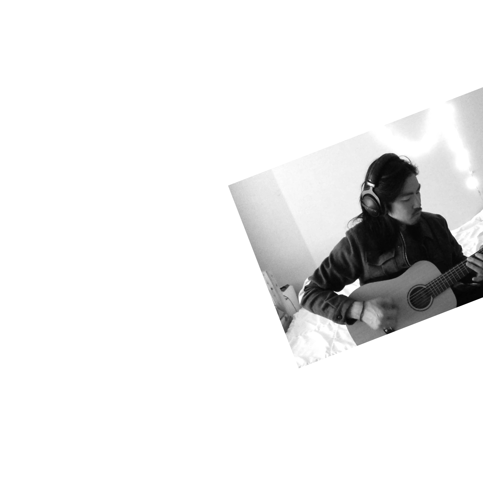

Never ever say goodbye,
Always I winder why,
wasign all the time.
SALTN
PAPER
SALTNPAPER-Bye,Autumn
솔튼페이퍼 (1984년 9월 14일) 는 힙합
가수 및 싱어송라이터, 에픽하이의 명예멤버이다.
많은 힙합가수의 앨범에 피처링으로 참여하였다.
영문이름은 마이클 김 (Michael Kim),
본명은 김윤민이며 디자이너 김영세의 아들이다.
소속사는 드림팩토리이며, 맵더소울크루에
소속되어 있다. 2010년 12월 15일, 첫 솔로
음반인 Lost in Translations EP를 발매하였다.
과거 및 맵더소울
미국 캘리포니아 주 베이 에어리아에서 자랐으며 고등학교 시절에 아버지인 김영세에게 기타를 배우고 어머니에게
피아노를 배우면서부터 음악을 시작하기 시작했다. 이후 고등학교 친구와 후배들로 같이 구성한 록밴드 위크엔드
세쉬의 리드보컬 및 래퍼로서 2003년 쌈지 사운드 페스티벌에 참여하는 등 활발하게 활동하였다.
밴드가 해산한 후 한국으로 돌아와 에픽하이의 타블로를 소개 받고 친해져 미쓰라 진에게 한국어를 배우는 등
에픽하이의 정규 3집 Swan Songs의 〈그녀는 몰라〉, "Follow the Flow", "BoneUs_Elements"로 참여하기
시작하면서 다른 힙합 아티스트들의 음반에 참여하였다.
2009년 3월, 맵더소울 설립 직후 설립 멤버 및 에픽하이의 명예멤버로 魂 : Map the Soul에 참여하였으며 이어
에픽하이의 월드 투어에 참여하는 등 활발한 활동을 시작했다
나는 계속 작업을 한다. 멈출 수가 없다.
곡 쓰는 재미만큼 재밌는게 없다. 좋은 게 나왔을 때 그 기분이 너무 좋아서 그렇다.
항상 뭔가 좋은 거를 찾았다는 그 기분이 날 때가 너무 좋다.
곡을 쓰다보면 그때 그때 좋은게 나와서, 항상 그 목표를 위해서 연구하게 된다.
본격 활동
현재 자신의 솔로 음반인 Lost In Translations을
작업하고 있다고 밝혔다. 그러나 맵더소울이 합병된
이후 잘 알려지지 않았다가 힙합플레이야를 통해
공연을 전개하였으며 자신이 참여한 공연장에서
Lost in Translations EP의 데모를 한정 판매하였다.
또한 여러 아티스트의 곡에 피쳐링으로 참여하는 등
계속해서 활동하였다.
2010년 11월, 음반의 발매가 임박했음을 알렸다. 11월 말로 발매 예정되어
있다 이후 미뤄졌고 12월 15일, 자신이 전곡 작사 및 작곡한 첫 번째 솔로
음반 Lost in Translations EP가 힙합플레이야와 아이튠즈를 통해
음반을 발매하였다.
2013년 4월 10일 드림팩토리로 이적 후 첫 싱글 Lovestrong
(Feat. Tablo)을 발매했다. 2013년 4월 15일
Lovestrong이 포함된 음반 SALTNPAPER
Mini Album을 발매했다.

GO
Hey would you believe me
If I said I miss you
In love
You're in love
We were in love
Oh my love
Go..
Love is really loving
If I said I miss you
I will try to be where I belong
Because there's nothing in the world
That could take this away
So I will go into
The dark of your night
I will follow you there
And wait for your light
For you I'm alive
모자
말쑥한 수트에 단정히 빗은 머리칼
어깨를 쫙 펴고 풍족한 미래에 희망을 기대어 가는 길
한참을 걷다가 문득 이건 아닌 거지
중얼거린 그 순간 내 안의 소리가 들려오더라
Like the first time
this feeling is out of this world
난 널 왜 잊고 살고 만 건지
그리 바삐 간 건지 미련스레
벅찬 내 노랠 다시 부르며
구부정하게 걸으며
낡은 내 모자를 쓴 편안함
내가 나일 수 있는 비로소
Like the first time
the feeling is out of this world
한참을 걷다가 문득 이건 아닌 거지
중얼거린 그 순간 내 삶의 모든 게 또렷해지더라
위의 두 노래 정말 좋다. 아니, 사실 앨범 전곡 모두 좋다. 솔튼 페이퍼를 처음 접하게 되었다면
모자, GO, 오 달아라 이 세 곡을 듣고 입문을 결정하길 바란다.
사실 우리나라에서 그것도 이 시대에 이런 장르의 음악을 하는 사람은 많지 않다. 더군다나 대부분의 곡이 영어이다 보니까
외국곡 같은 느낌이 드는 건 사실이다. 이런 장르를 좋아해도 보기힘들어 느낄수없었던 나에게 관심을 끌게 한 가수가 바로
솔튼 페이퍼이다. 다만 그에게 하나 바라는 점은 한국어 가사로도 이런 vibe의 곡을 많이 발매해줬으면 한다.
물론 영어 가사여도 이런 좋은 곡들을 계속 발매해준다면 감사히 듣겠다.
More Than Just Circles 은 앨범의 유기성 또한 훌륭하다. 모든 Track이 하나로 연결된 것처럼 자연스럽게 다음 곡으로
연결된다. 특히, 4번 트랙 Fire에서 5번 트랙 Ashes로 넘어갈 때, 마치 하나의 곡처럼 느껴진다. 이 두 곡을 들을 때 피아노
베이스의 구슬픈 사운드가 인상 깊었다.
ALBUM
잘 자 + Island
Spin
More Than Just Circles
Love strong
완벽해요
SALTN PAER
MYK/Saltn Paper Band : Awe Fin
ONE HEART

어쿠스틱 기타 줄을 따라 멜로디가 사뿐히 내려앉는다.
단조로운 듯한 도입부를 지나면 변주의 파도가 밀려들어온다.
노래에서 길을 잃을 법하지만, 곡의 런닝타임이 끝나면 다시 재생 버튼을 누르게 된다.
솔튼페이퍼의 음악에는 장르로 구획할 수 없는 묘한 이끌림이 묻어있다.
다른 가수도 마찬가지겠지만, 앨범 내는 자체는 기분이 좋고 매번 만족스러워요.
그런데 저는 완성된 앨범을 내면, 바로 다음 앨범 생각에 빠져요.
계속 새로운 음악을 보여드리고 싶은 거죠.
그렇다고 발매한 음악에 대한 아쉬움은 아니에요.
더 보여주고픈 욕심이죠
솔튼페이퍼 공연
공연 와주신분들 멋진 연주와 노래로 도와주신 친구들 한번더 진심으로 감사합니다.
여러분 덕뿐에 힘이생겼습니다. 빨리 새로운 음악으로 열심히준비해서 곧 또 만나요.
2017.06.25
Lounge Rock Special
끝없는 잔향 속에서 우리는
솔튼페이퍼
웨이스티드쟈니스
MORNING
morning songwriting with the abundance of four tracks. still prefer these to laptops. if the song's good it'll let u know.
Big Phony
live in Seoul next week
ALBUM RELEASE SHOW
216.12.16.Fri.9pms
Thank You to
Thank you to all my amazing friends who helped put this show together. And thank you everyone for coming out and making it an unforgettable night.
more new music soon
things are changing.. life keeps happening.. but there’s always new music to be discovered, deciphered, and delivered. plus there’s a grape soda on my mic stand.
#more new music soon.